Stand still. Two seconds of silence before you start.
Count the five questions on your fingers. It helps you remember them.
Do not read the slide. Look at the audience.
RememberFive questions, five fingers.
01
The gap
Slide 1 · 40 s
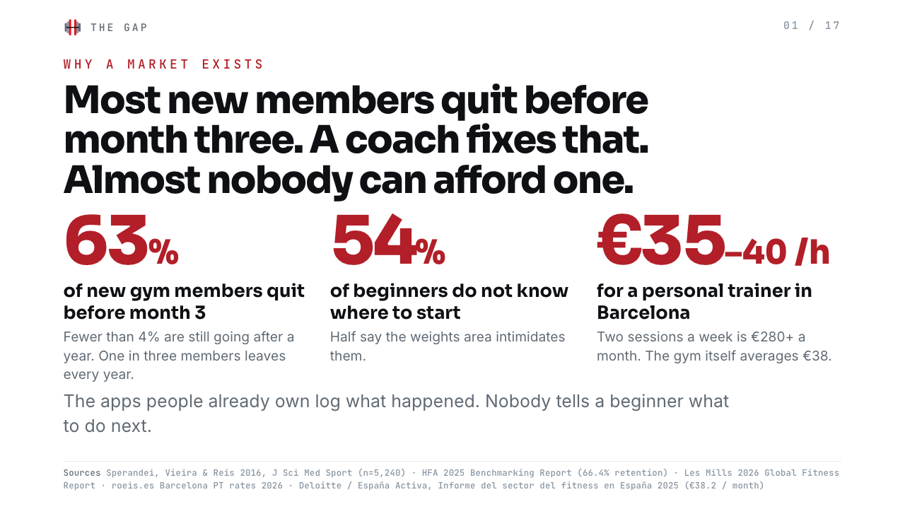
Say this
Three numbers.
63 percent of new gym members quit before month three.
That is from a study of more than five thousand members.
54 percent of beginners say they do not know where to start.
The thing that fixes both is a personal trainer.
But a trainer costs 35 to 40 euros an hour in Barcelona.
The gym itself costs 38 euros a month.
So the people who need a coach most cannot pay for one.
How to read it
Say each number, then stop for one second. Let it land.
Point at each big red number when you say it.
The last line is the whole slide. Say it slowly.
Do not add extra numbers. Three is enough.
Remember63 quit. 54 are lost. 40 euros an hour.
02
Segmentation
Slide 2 · 35 s
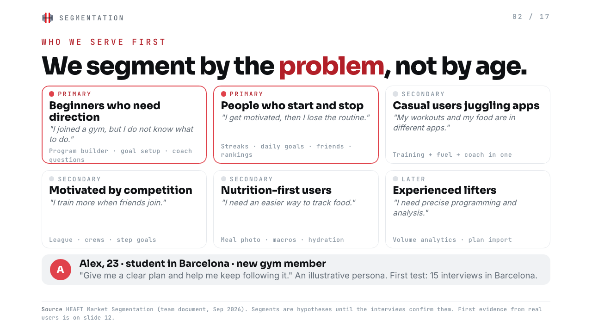
Say this
We segment by the problem, not by age.
Two primary segments.
One: beginners who need direction. 'I joined a gym, but I do not know what to do.'
Two: people who start and stop. 'I get motivated, then I lose the routine.'
These two overlap. Someone who needs a plan, and needs help sticking to it.
Everything else is secondary for now.
Alex is our example customer. 23, student, Barcelona, new at the gym.
We test this with 15 interviews before we spend on anything else.
How to read it
Read the two quotes like a real person talking. Change your voice a little.
Point at the two red cards. Ignore the grey ones.
Say 'Alex' warmly. He is a person, not a chart.
'15 interviews' is the promise. Make it sound like a plan, not a hope.
RememberTwo problems: no direction, no routine. Alex, 23, Barcelona.
03
Market size: TAM, SAM, SOM
Slide 3 · 50 s
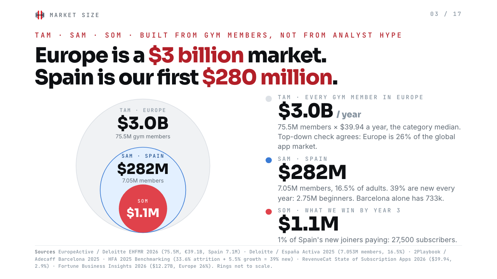
Say this
We built the market from gym members, not from analyst reports.
Europe has 75 million gym members.
The median fitness app costs 40 dollars a year.
75 million times 40 dollars is 3 billion dollars. That is our TAM.
A top-down check agrees. Europe is 26 percent of the 12 billion global app market.
Spain is our SAM. 7 million members, so 282 million dollars.
And 2.75 million of them are new every year.
Our SOM, what we can really win by year three:
1 percent of those new members. 27,500 subscribers. 1.1 million dollars a year.
It is a small number on purpose. It is a number we can defend.
How to read it
This is the hardest slide. Go slow. Three rings, three numbers, top to bottom.
Point at the big ring, then the blue ring, then the red circle. Do not jump around.
Say the multiplication out loud. People trust maths they can follow.
End on 'a number we can defend'. That line answers the question before anyone asks it.
Remember75 million × 40 dollars = 3 billion. Spain 282 million. We want 1.1 million.
04
The landscape
Slide 4 · 45 s
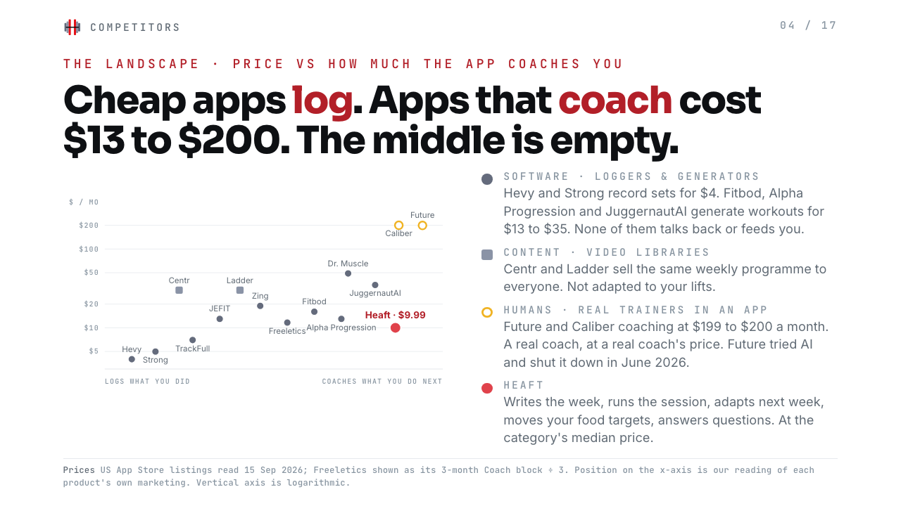
Say this
This map shows price against how much the app coaches you.
Bottom left: loggers. Hevy and Strong. Four dollars. They record what you did.
Middle: generators. Fitbod, Alpha Progression, Juggernaut. 13 to 35 dollars.
They write workouts. But they do not talk to you, and they do not feed you.
Top right: humans. Future and Caliber. 200 dollars a month.
Now look at the middle right. It is empty.
A full coach, at a normal app price. Nobody is there.
That is where Heaft sits. 9.99.
How to read it
Walk the map with your hand: bottom left, middle, top right, then the red dot.
Pause before 'It is empty'. That pause is the point of the slide.
Keep 'loggers, generators, humans' as three clear words. The audience will reuse them.
Do not name every dot. Three groups and one red dot.
RememberLoggers. Generators. Humans. The middle is empty.
05
Pricing
Slide 5 · 35 s
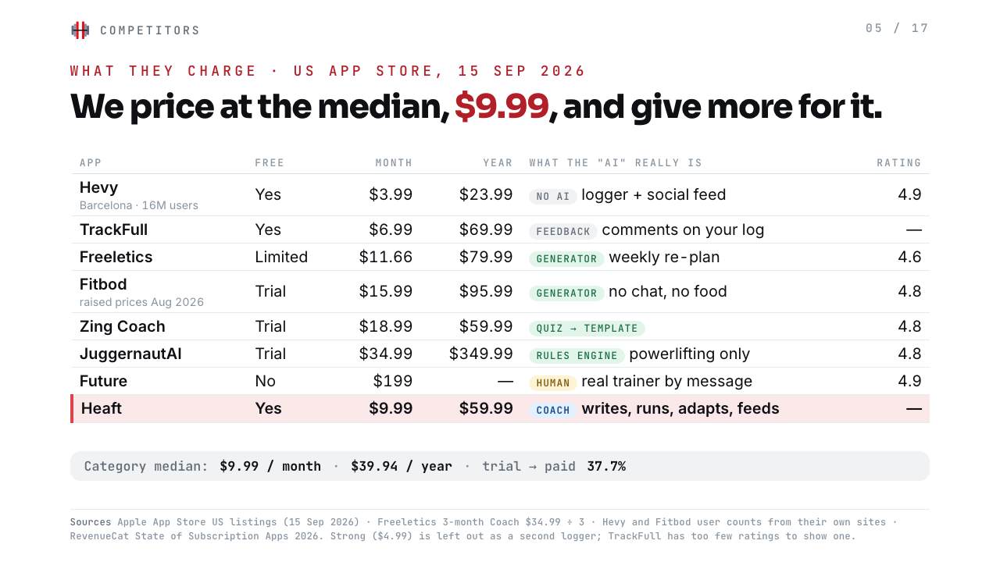
Say this
Here are the real prices, from the App Store, this week.
The loggers have free tiers. The generators mostly do not.
The benchmark for health and fitness apps is 9.99 a month.
We price exactly at that median.
Fitbod raised its price to 15.99 in August. Zing is 18.99.
Our annual plan, 59.99, is above the 39.94 median. That is a deliberate test.
Same price as the market. More coach for it.
How to read it
Do not read the table. Point at the red Heaft row and at the benchmark line at the bottom.
Say '9.99' twice: once for the benchmark, once for us. The repetition is the message.
If someone asks about the annual price, say: 'It is a test. We will lower it if the data says so.'
Remember9.99 is the median. We are the median, with more inside.
06
Who makes money
Slide 6 · 30 s
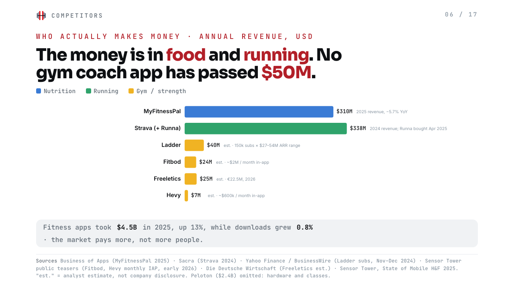
Say this
Where is the money today? Food and running.
MyFitnessPal, 310 million dollars, but shrinking.
Strava, 338 million, and they bought Runna, a running coach.
Look at the yellow bars. No gym coaching app has passed 50 million.
One more fact. In 2025 fitness apps earned 13 percent more money,
with almost no growth in downloads.
People are paying more, not more people.
The gym seat is open.
How to read it
Point at the two long bars, then sweep your hand over the short yellow ones.
Say 'the gym seat is open' as a conclusion, not a slogan. Calm voice.
'est.' on the slide means estimate. If asked, say so honestly.
RememberFood 310. Running 338. Gym: nobody over 50.
07
Why nobody leads yet
Slide 7 · 45 s
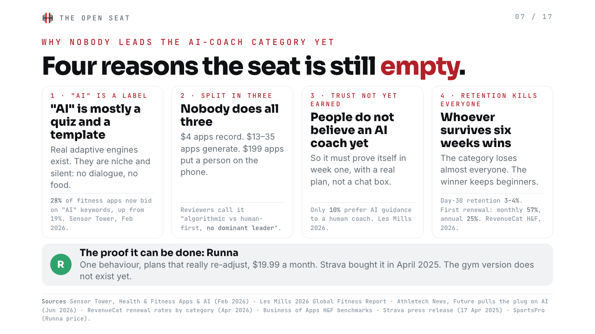
Say this
Four reasons the seat is still empty.
One. 'AI' is a label. 28 percent of fitness apps now buy the word AI in the store.
Most of it is a quiz and a template.
Two. The market is split in three: loggers, generators, humans. Nobody does all three.
Three. Trust. Only 10 percent of people prefer an AI coach today.
Future, the 199 dollar app, shut down its AI beta in June.
So our coach must prove itself in week one, with a real plan, not a chat box.
Four. Retention kills everyone. Day 30 retention is 3 to 4 percent.
Whoever keeps beginners for six weeks, wins.
Runna proved it can be done for running. The gym version does not exist yet.
How to read it
Count the four reasons on your fingers again. Same gesture as the cover. People remember gestures.
Reason three is the honest one. Do not rush it. Admitting the trust problem makes us credible.
Finish on Runna with energy. It is the proof, and it is the last thing they hear.
If you are short on time, cut reason two. The map already showed it.
RememberLabel. Split. Trust. Retention. Then Runna.
08
What we do better
Slide 8 · 35 s
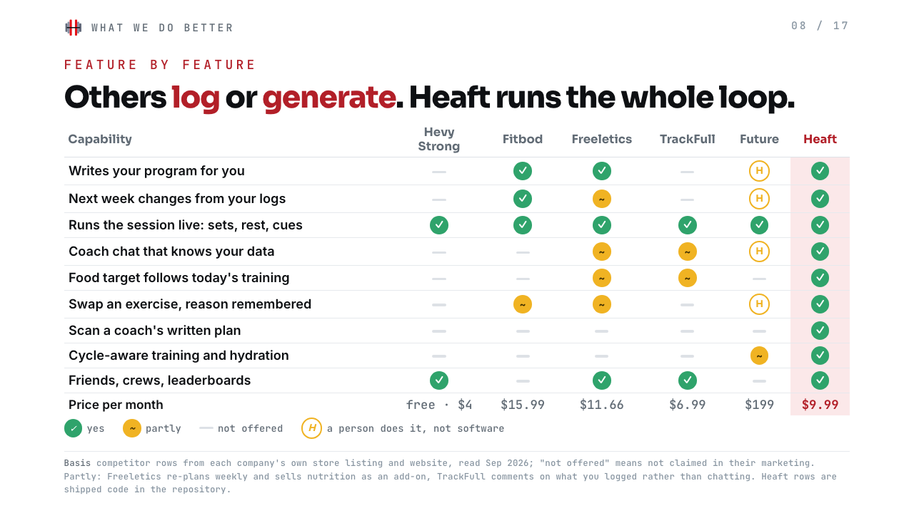
Say this
Feature by feature.
Green means it is in the product. Yellow means partly. A dash means not offered.
Look at the two rows nobody else has.
Nutrition that follows today's training.
And scanning a coach's written plan, from a PDF or a photo.
Everything in our column is shipped code, not a roadmap.
Others log, or generate. Heaft runs the whole loop.
Built, not finished.
How to read it
Point at the red Heaft column first, then at the two rows with only one green dot.
'Built, not finished' is our honest line. Say it plainly. No apology, no boasting.
Do not defend every yellow dot for competitors. If challenged: 'That is what their own marketing claims.'
RememberTwo rows nobody has: food follows training, scan a written plan.
09
What one user costs us
Slide 9 · 45 s
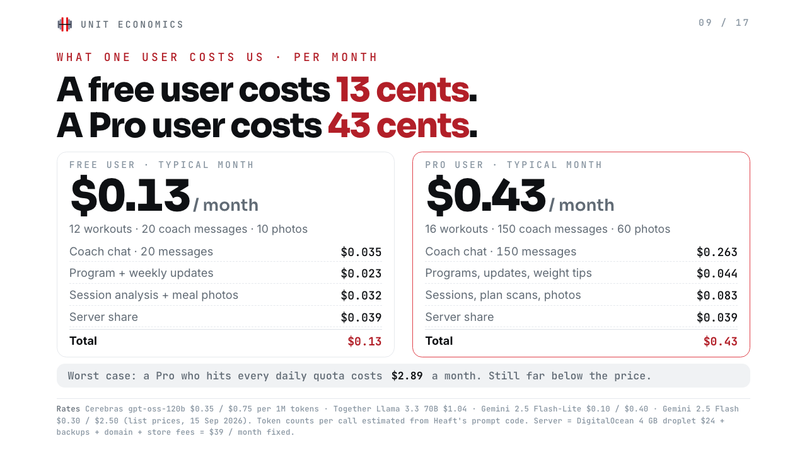
Say this
Now real numbers about cost.
A typical free user costs us 13 cents a month.
About 9 cents of AI, 4 cents of server.
A typical Pro user costs 43 cents a month.
150 coach messages, two programs, two plan scans, sixty meal photos.
Even a Pro who hits every daily limit, 1,500 messages, costs 2 dollars 89.
Still far below the price.
These are today's list prices from Cerebras, Together and Google,
times the real size of our prompts.
How to read it
Say '13 cents' and '43 cents' slowly. They are the two numbers people will quote later.
Point at the two boxes: left free, right Pro.
The worst case line is your safety net. If someone says 'AI is expensive', point at 2.89.
Do not explain tokens unless asked. If asked: 'A token is about three quarters of a word.'
Remember13 cents free. 43 cents Pro. Worst case 2.89.
10
Does one Pro pay?
Slide 10 · 40 s
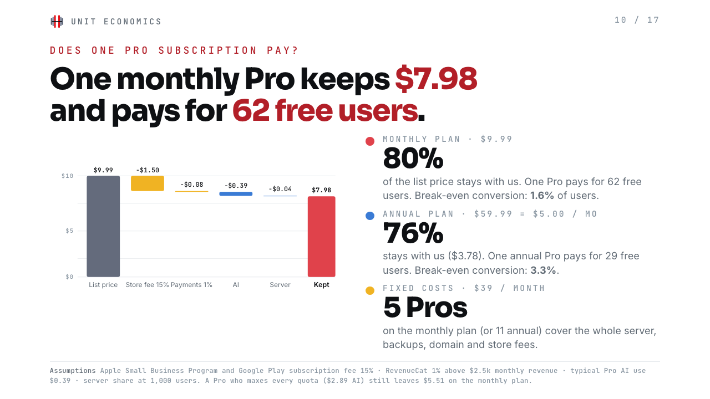
Say this
From 9.99, we lose 1.50 to the app store.
8 cents to payments. 39 cents to AI. 4 cents to server.
We keep 7 dollars 98. That is 80 percent.
One monthly Pro pays for 62 free users.
So we break even when 1.6 percent of users pay.
The annual plan keeps 3.78 and breaks even at 3.3 percent.
And five monthly Pros cover the whole server bill.
How to read it
Follow the chart left to right with your finger: grey, yellow, blue, red.
The number to hit hard is 62. Pause after it.
If asked why 15 percent store fee: 'Apple Small Business Program and Google Play both take 15 percent under one million dollars.'
RememberKeep 7.98. One Pro feeds 62 free users. Break-even 1.6 percent.
11
At scale
Slide 11 · 35 s
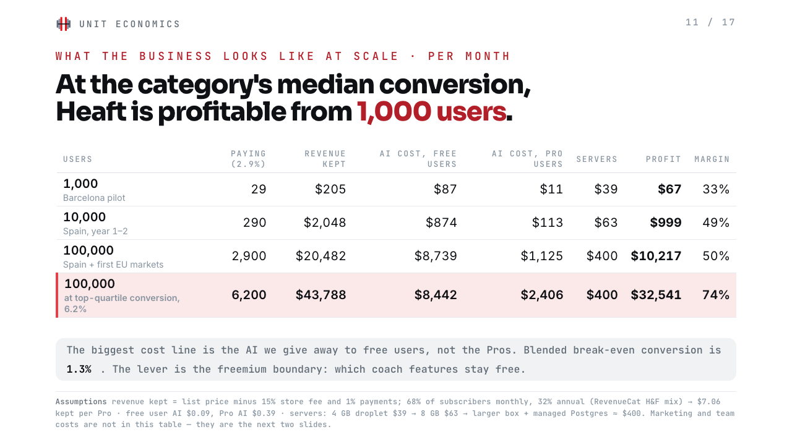
Say this
What does the business look like at scale?
The category median is 2.9 percent of users paying.
At that rate we are profitable from 1,000 users.
At 10,000 users, about 1,000 dollars a month of margin.
At 100,000, about 10,000 dollars.
Notice the biggest cost. It is the AI we give away to free users, not the Pros.
So the lever is the free tier: which coach features stay free.
Two things are missing here: what a user costs to get, and what we cost.
Both are on the next two slides.
How to read it
Point at the profit column only. Ignore the other columns unless asked.
Say the last two lines with a straight face, then move on. The next slide answers them, so do not start the answer here.
RememberProfitable from 1,000 users. The free tier is the lever.
12
What a user costs to get
Slide 12 · 45 s
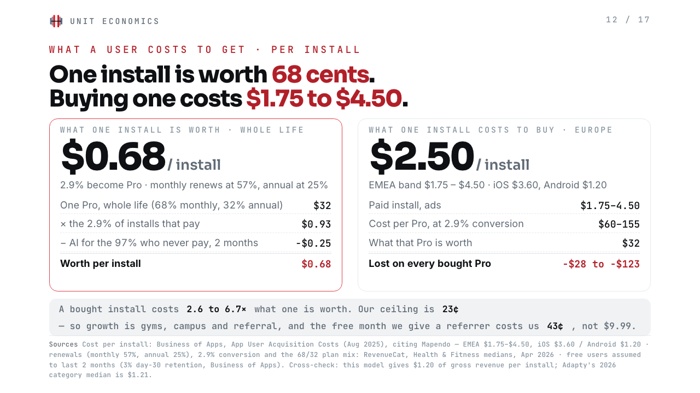
Say this
Someone read the first version of this study and asked the right question.
Where is the marketing cost?
So: what is one new user worth, and what does one cost to buy?
Worth first. 2.9 percent of installs become Pro.
One Pro is worth 32 dollars over their whole life.
Spread over everyone who installs, that is 93 cents.
Take away the AI we give to the 97 percent who never pay.
One install is worth 68 cents.
Now the price. A paid install in Europe costs 1.75 to 4.50 dollars.
That is two and a half to almost seven times more than the user is worth.
Per paying Pro: 60 to 155 dollars, for someone worth 32.
So we cannot buy users at this price. We can pay about 23 cents an install.
That means gyms, the campus, and people telling their friends.
And a free month for a referral costs us 43 cents of AI, not ten dollars of cash.
How to read it
Name the question and say that someone asked it. It shows the study is still moving.
Left box is what a user is worth, right box is what one costs. Go left, then right. No jumping.
The pair to hit is 68 cents and 2 dollars 50. Say them next to each other, slowly.
If someone says 'so you cannot grow': paid ads are one channel, not growth. Runna grew on running clubs.
If asked when ads would work: at 7.8 percent conversion. The top quartile today is 6.2. So, not yet.
RememberWorth 68 cents. Costs 2.50. We can pay 23 cents.
13
Below the product line
Slide 13 · 40 s
Say this
Same question, now for the rest of the company.
Today the whole company costs 47 dollars a month.
A server and the Apple fee. Nobody is paid.
When we register the company properly: three autonomo fees, a gestoria, the stores, the tools.
About 1,700 dollars a month. That needs 17,000 users to cover.
One junior developer in Barcelona costs 3,020 dollars a month with social security.
Every person we pay needs 30,000 users.
So look at the last row. Fully loaded, we are negative until we are big.
Unpaid, we break even at 19,000 users.
Paying the three of us, 128,000. Or 39,000 if we convert like the top quartile.
Our own time is the biggest cost in this study, and it is the one nobody invoices.
How to read it
Do not hide the minus signs. Point at them. The honesty is the argument here.
Keep two numbers in your head: 19,000 unpaid, 128,000 paid.
If asked 'so it does not work?': the product is profitable from 1,000 users. The company is a team problem, not a margin problem.
If asked about money: this is exactly what a first investment would buy. The salaries, not the servers.
Say the last line plainly and stop. No apology.
Remember47 dollars today. 19,000 users unpaid. 128,000 with salaries.
14
The first user
Slide 14 · 35 s
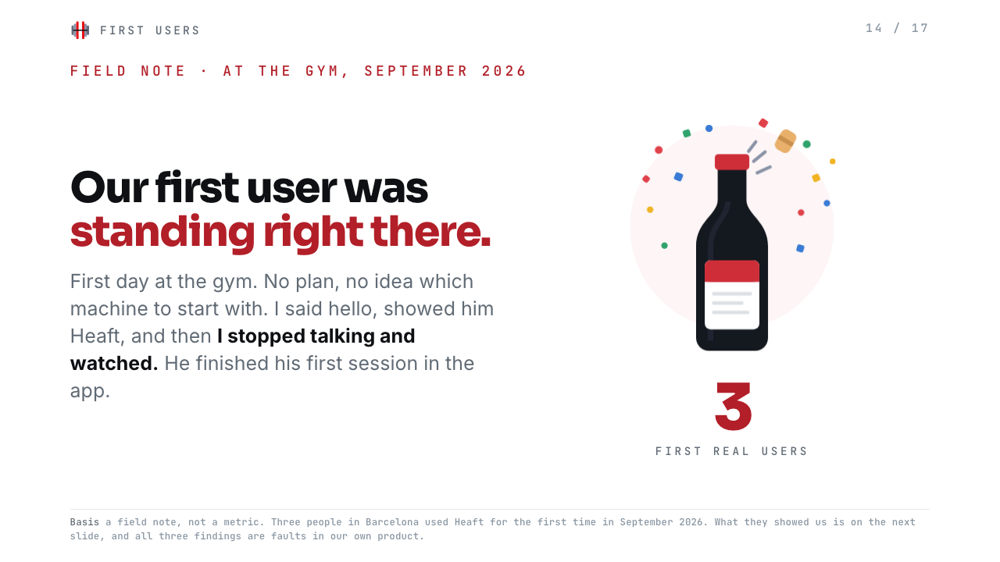
Say this
Everything until now was desk research. This part is ours.
Our first user was standing right there. At the gym, on his first day.
No plan, no idea which machine to start with.
I said hello, showed him Heaft, and then <em>I stopped talking and watched.</em>
He finished his first session in the app.
Three people have now used Heaft for the first time.
How to read it
Slow down. This is a story, not a table. Let the room enjoy it.
The bottle is the joke: we are celebrating three people. Smile at it, then get serious on the next slide.
"I stopped talking and watched" is the method of this whole study. Say that line clearly.
Do not oversell three users. The value is on the next slide, not this one.
RememberFirst day at the gym. I stopped talking and watched.
15
Three faults
Slide 15 · 45 s
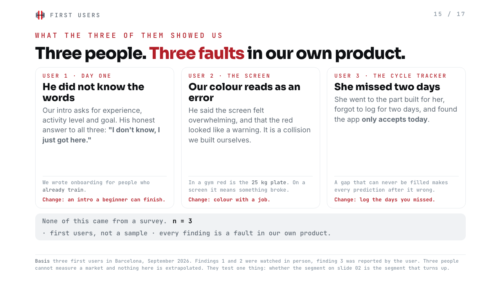
Say this
Three people, three things we got wrong.
Our intro asks for experience level, activity level and training goal.
His honest answer to all three was: <em>I don't know, I just got here.</em>
We wrote the onboarding for people who already train.
The second user said the screen felt overwhelming, and the red looked like a warning.
In a gym, red is the 25 kilo plate. On a screen, red means something broke. That one is our own mistake.
The third went straight to the cycle tracker, the part built for her.
She missed two days, and found the app only accepts today.
A gap she can never fill makes every prediction after it wrong.
Three changes came out of it. <em>None of it came from a survey.</em>
How to read it
This is the most honest slide in the deck. Do not defend the product. Every finding is our own mistake.
Slow down on "I don't know, I just got here." That line proves the segment we chose is real.
Point at each card, then at the red Change line under it.
Say "three" out loud and say it is three. Nobody attacks a small sample you named yourself.
Finish on "none of it came from a survey". That is the method, and it is the point.
RememberHe did not know the words. Red looks like an error. She could not go back.
16
The answer
Slide 16 · 30 s
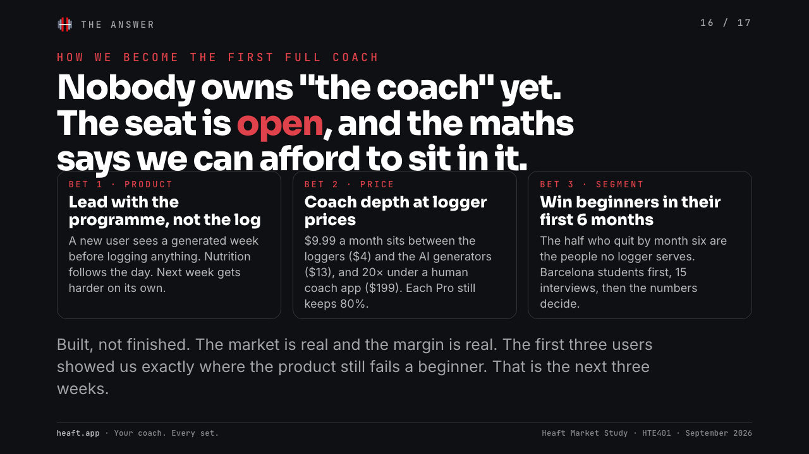
Say this
So. Nobody owns the coach yet. The seat is open.
Three bets.
One: lead with the programme, not the log. A new user sees a full week before logging anything.
Two: coach depth at the category's median price.
Three: win beginners in their first six months. Barcelona first.
The market is real. The margin is real.
And the first three users showed us exactly where the product still fails a beginner.
That is the next three weeks.
How to read it
Slow down. This is the last thing they remember.
Three bets, three fingers. Same gesture, third time.
The last sentence is honest and confident. No 'thank you' rush after it. Stop, breathe, then say thank you.
RememberProgramme first. Median price. Beginners first.
17
Sources
Slide 17 · 10 s
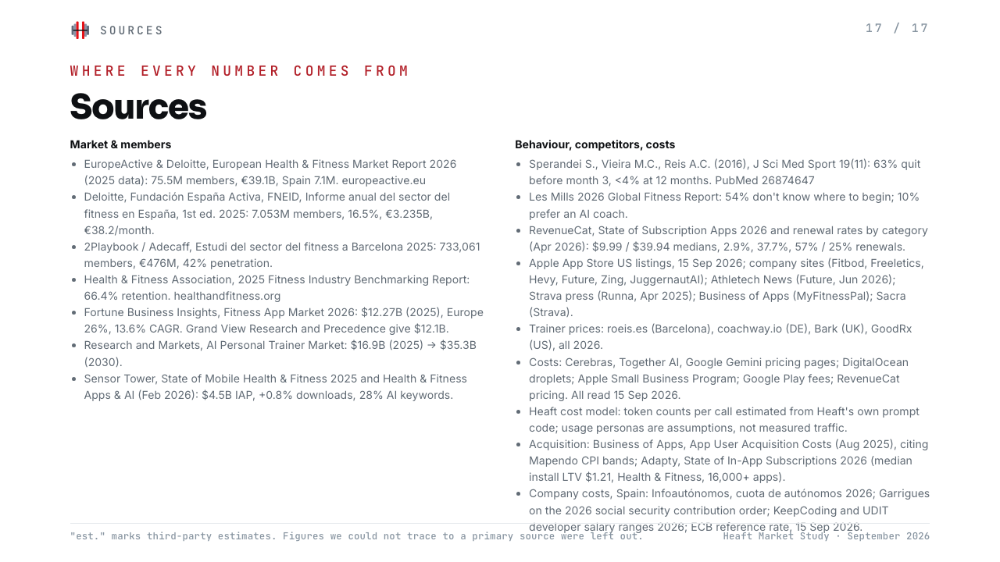
Say this
Every number on these slides has a source printed on the slide.
Estimates are marked as estimates.
Anything we could not trace to a primary source, we left out.
Thank you.
How to read it
Leave this slide on screen during questions.
If someone challenges a number, point at the footer of that slide and read the source out loud.
RememberEvery number has a source on the slide.
Questions they will ask
Short answers, ready to say
Why would anyone trust an AI coach?
Today most do not: only 10 percent prefer one. That is why we lead with a real generated programme in week one, not a chat box. Trust comes from the plan working, not from the word AI.
What about ChatGPT? It is free.
ChatGPT does not know your last set, your programme or today's protein. Heaft's coach does, because it sits on top of your logs. The chat is the small part. The programme, the session and the food targets are the product.
How did you get the 3 billion?
75.5 million gym members in Europe, times 39.94 dollars, the median annual price of a fitness app. A top-down check gives 3.2 billion: 26 percent of the 12.3 billion global app market.
Why is your SOM so small?
On purpose. 1 percent of Spain's yearly new gym members is 27,500 subscribers. It is a number we can defend and measure. Bigger numbers need bigger evidence than we have.
Why 9.99 and not cheaper, like Hevy?
Hevy is a logger; loggers cannot charge more because the free tier already does the job. We are the category median, 9.99, and we carry coach features that the 13 to 35 dollar apps do not have.
Is the AI cost really that low?
Yes, at today's list prices. A coach message costs about 0.2 cents. Even a user who hits every daily limit costs 2.89 a month. Prices for these models have fallen every year.
What is not in the cost table?
Nothing now, and that is the point of slides 12 and 13. The product line is AI and servers. Below it sit acquisition, the company floor and salaries. Per user the product makes about 10 cents a month; a bought install costs 1.75 to 4.50 dollars and is worth 68 cents, so acquisition has to be organic; and a three-person team on Barcelona junior salaries needs 128,000 users, or 39,000 if we convert like the top quartile. Unpaid, the company breaks even at 19,000.
So why not just spend on ads?
Because at 9.99 the maths does not close. One install is worth 68 cents to us over its whole life. A paid install in Europe costs 1.75 to 4.50. Ads would only work at about 7.8 percent conversion, and the top quartile of this category is 6.2. Gyms, the campus and referrals cost time, and time is what we have.
Fitbod already has 15 million downloads. Why can you win?
Fitbod generates workouts and stops. No dialogue, no nutrition, and it just raised prices 20 percent. We are not fighting Fitbod on generating. We are the coach that runs the whole loop.
Future tried AI and stopped. Does that not prove it fails?
Future sells human coaching at 199 dollars. Their members paid for a person and got software; of course they complained. Our users start with software at 9.99. Different promise, different price.
Three users is nothing. How is that evidence?
It is not market evidence and we do not use it as any. Three people cannot size a market. What they can do is show that the product fails a beginner in three specific places, which is exactly what they did. The market numbers come from Deloitte, EuropeActive and RevenueCat. The three users tell us what to fix next week.